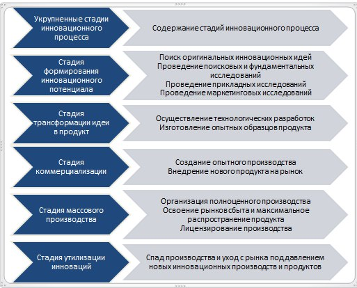
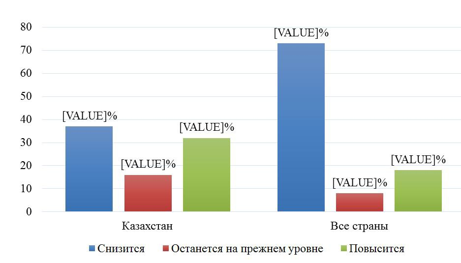
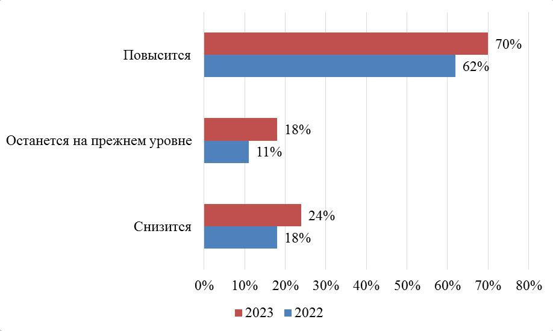
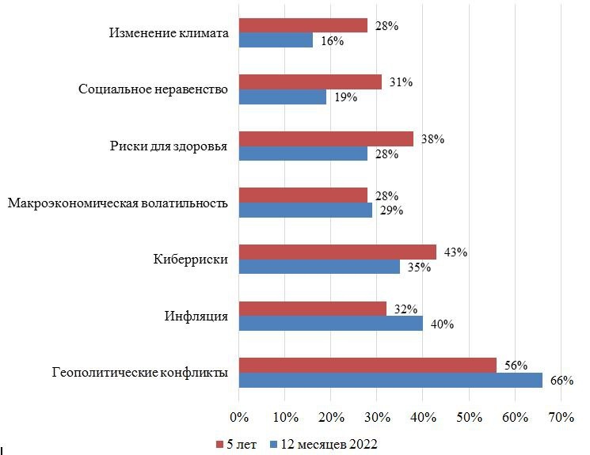
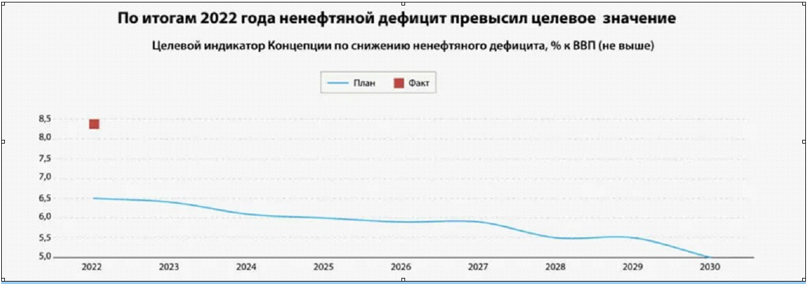
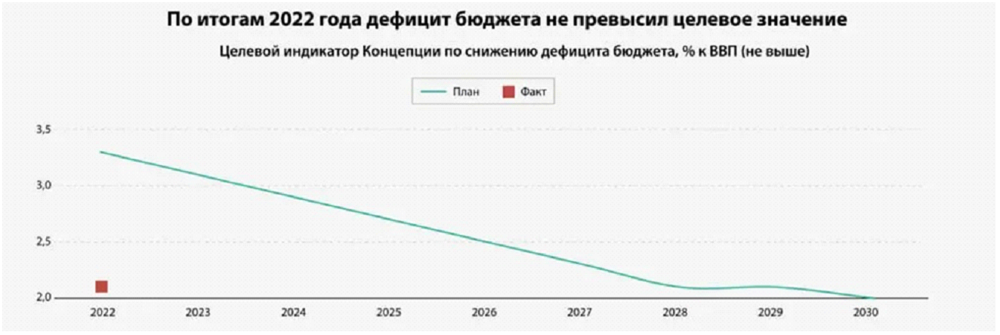
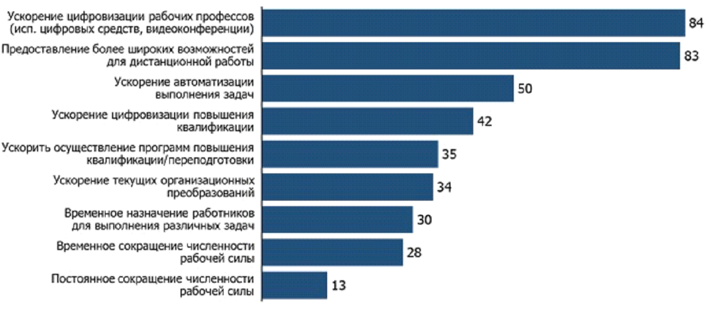
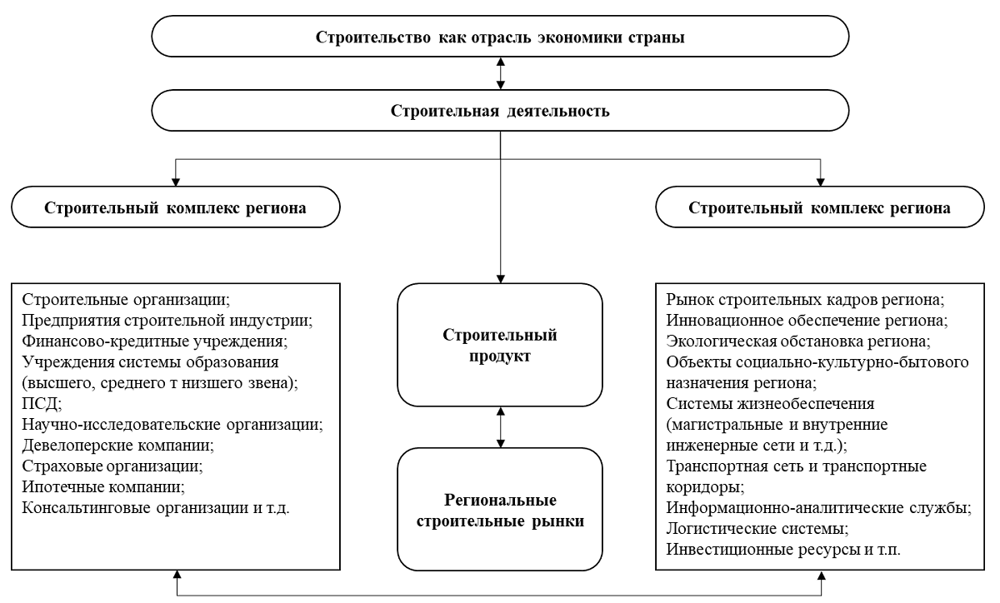
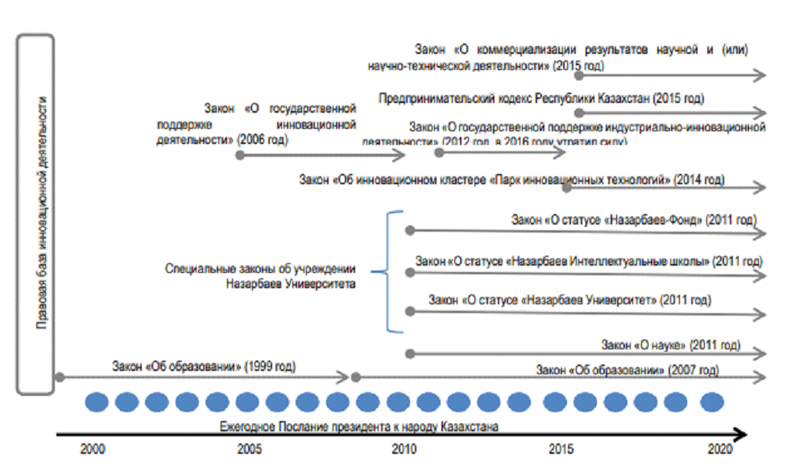

1.2 Обзор текущей ситуации развития науки в сравнении с мировой тенденцией и рынком
1.2.1 Анализ текущих мировых тенденций в выбранных областях наук
В 1911 году выдающийся американский ученый Йозеф Шумпетер в своем фундаментальном труде «Теория экономического развития» впервые в экономической науке обосновал категорию «инновация» (как новую комбинацию факторов производства, мотивированную предпринимательским духом и приводящую к необратимым изменениям в экономике) и раскрыл содержание инновационного процесса.
Инновации воздействуют на динамику экономических отношений, изучение ее через конкретную схему инновационного цикла, которая включает набор последовательных стадий (Рисунок 1).

Рисунок 1 – Инновационный процесс в современной рыночной экономике
Инновационный процесс является основополагающим инструментом по отношению к выстраиванию структуры современных рынков и отраслей, что позволяет отслеживать полную линейность цикла, наличие последовательного прохождения продукта через все указанные стадии.
Ключевые внешние вызовы, которым Казахстан должен сейчас противостоять в области инновационного развития, являются:
1. Ускорение технологического развития мировой экономики. В современном мире технологии развиваются с необычайной скоростью, и Казахстану важно быть в курсе последних тенденций и активно внедрять инновационные разработки. Это поможет стране быть конкурентоспособной в глобальной экономике и привлечь инвестиции и высококвалифицированных специалистов.
2. Усиление конкурентной борьбы в мировом масштабе. Казахстану необходимо создать благоприятные условия для привлечения инвестиций и высококвалифицированных кадров. Это включает в себя развитие образовательной системы, создание инфраструктуры для инновационных проектов и поддержку стартапов. Также важно активно взаимодействовать с другими странами и участвовать в международных исследовательских и инновационных программ.
3. Изменение климата, старение населения и проблемы здравоохранения. Эти глобальные вызовы имеют прямое влияние на развитие научных исследований и технологий. Казахстан должен активно работать над поиском инновационных решений в области экологии, здравоохранения и устойчивого развития, которые помогут сохранить ресурсы и улучшить качество жизни населения.
Для успешного противодействия этим вызовам Казахстану необходимо учитывать глобальные тренды и их влияние на национальную инновационную систему. Это предполагает формирование эффективной государственной политики в области научных исследований и разработок, активную работу с научными сообществами и бизнес-сектором, а также укрепление международных партнерств и сотрудничества.
Наряду с основами политики Республики Казахстан в области развития науки (Законов: «О науке», «О государственной поддержке малого предпринимательства», «Патентный закон Республики Казахстан», «Об авторском праве и смежных правах», «Об инновационной деятельности») и технологий на дальнейшую перспективу и Стратегией индустриально-инновационного развития Республики Казахстан на 2003-2015 гг., долгосрочный прогноз научно-технологического развития Казахстана является одним из ключевых элементов системы управления экономическим и научно-технологическим развитием страны.
В целях достижения стратегической цели развития науки и технологий в Казахстане следует уделять особое внимание ряду задач:
1. Повышение эффективности государственного участия в развитии науки и технологий. Для этого необходимо разработать механизмы, которые позволят государству активнее поддерживать и стимулировать научные исследования, инновационные проекты и технологические разработки. Кроме того, следует улучшить механизмы оценки эффективности и результативности научных проектов и инициатив.
2. Обеспечение инновационной привлекательности сегмента исследований и разработок. Для этого необходимо создать благоприятные условия для привлечения частного сектора и инвестиций в научные исследования и инновационные проекты. Важно снизить зависимость от государственного финансирования и привлечь больше негосударственных источников финансирования. Повышение доли негосударственного финансирования в сегменте исследований и разработок позволит развивать научные направления и проекты, которые наиболее востребованы в индустрии и обществе.
3. Создание конкурентоспособной инновационной системы на мировом уровне. Для этого необходимо активизировать инновационные процессы в национальной экономике и социальной сфере. Важно развивать механизмы коммерциализации научных исследований, поддерживать трансфер технологий от науки к промышленности и создавать условия для развития стартапов и инновационных предприятий. Также необходимо укреплять связи и сотрудничество с мировыми научными центрами, университетами и инновационными организациями.
4. Рациональная интеграция отечественной науки и технологий в мировую инновационную систему. Для этого необходимо создать условия для успешного интегрирования казахстанской науки и технологий в мировую научно-техническую среду. Важно развивать международное сотрудничество, привлекать иностранных специалистов, осуществлять обмен научными знаниями и опытом. Также необходимо улучшить систему защиты интеллектуальной собственности и развивать механизмы коммерциализации научных разработок.
Разработка рекомендаций по управлению научной, научно-технической и научно-инновационной деятельностью имеет высокую актуальность в Казахстане. Это связано с необходимостью эффективного управления и координации деятельности различных органов и институтов в области науки и технологий. Такие рекомендации помогут оптимизировать процессы разработки и реализации инновационных проектов, а также повысить их результативность и соответствие национальным интересам.
Инфраструктурное развитие: Казахстан активно развивает свою инфраструктуру, строит новые объекты и модернизирует существующие. Развитие строительной отрасли и сферы производства строительных материалов становится ключевым фактором в обеспечении этого роста.
Энергоэффективность и экологичность: Строительство и использование строительных материалов оказывают значительное воздействие на окружающую среду. Продвижение научных и инновационных решений для повышения энергоэффективности и снижения экологической нагрузки является критически важным для Казахстана, особенно в контексте изменения климата.
Экономический рост: Развитие научно-технической и инновационной деятельности в строительной сфере способствует экономическому росту, созданию рабочих мест и привлечению инвестиций.
Социальное развитие: Развитие строительной отрасли и производства строительных материалов в Казахстане способствует социальному развитию, создавая рабочие места и обеспечивая доступ к качественным жилью и инфраструктуре.
Стратегические цели государства: Казахстан, как суверенное государство, определяет свои стратегические цели и задачи. Развитие строительной сферы и сферы производства строительных материалов может быть важным элементом достижения этих целей.
Поддержка инноваций: Создание рекомендаций и коллегиальных органов для управления научной и инновационной деятельностью в строительной сфере способствует поддержке местных инноваций, венчурному капиталу и исследованиям, что способствует созданию новых решений и развитию собственных технологий.
Следовательно, разработка рекомендаций и эффективное управление научной и инновационной деятельностью в сфере производства строительных материалов и строительной отрасли в Казахстане имеют большое значение для стратегического развития страны, экономического роста и устойчивости. Государство может сыграть ключевую роль в создании соответствующих механизмов управления, включая коллегиальные органы, для достижения этих целей.
Актуальность исследования разработка рекомендаций по управлению научной, научно-технической и научно-инновационной деятельностью, включая работу коллегиальных органов при государственных органах в Казахстане, является чрезвычайно актуальной в свете ряда факторов:
- экономическое развитие: Казахстан стремится диверсифицировать свою экономику и снизить зависимость от сырьевых ресурсов. Развитие научной, научно-технической и инновационной сферы способствует созданию инновационных отраслей, что может стимулировать экономический рост.
- улучшение качества жизни: Инновации в области строительных материалов, образования, транспорта и других сферах могут улучшить качество жизни граждан Казахстана. Это включает в себя развитие строительных технологий, экологические решения и улучшение инфраструктуры.
- научные исследования и разработки: Казахстан имеет потенциал для научных исследований и разработок в различных областях, включая агропромышленный комплекс, энергетику, горнодобывающую промышленность и многие другие. Научные и инновационные проекты могут усилить существующие преимущества.
- глобальные вызовы: Казахстан сталкивается с глобальными вызовами, такими как изменение климата, устойчивое развитие и т.д. Научно-технические исследования могут способствовать решению этих проблем.
- конкурентоспособность: Успешное развитие инноваций и науки способствует повышению конкурентоспособности Казахстана на мировой арене.
- инвестиции и сотрудничество: Привлечение иностранных инвестиций и международное сотрудничество в области научных исследований и инноваций могут быть существенными для развития страны.
- молодежный потенциал: Казахстан имеет обширный потенциал молодых ученых и инноваторов, и развитие научных и инновационных программ способствует их вовлечению.
Для изучения данного подраздела по Информационно-аналитическому сопровождению науки были выбраны следующие отрасли науки и привлечены эксперты:
1. Утелбаев Болысбек Тойчибекович, «Центр Комплексное использование минерального сырья РК», ВНС лабораторий электрохимии и металлов., доктор хим наук, профессор. Автор около 200 научных трудов. В базе Scopus - 5 cтатьи, Хирша -1. Область исследования - физическая химия, катализаторы, элементарные переносчики энергии;
2. Орынбеков Елжан Серикович Ассоциированный профессор-исследователь, ТОО «Международная образовательная корпорация» (КазГАСА), Автор более 60 научных работ, В базе Scopus-8 статей, Хирша-1, Wos-2, Хирша-1, Под.руководитель ПЦФ на 2023-2025гг. КазНИТУ им. К.И. Сатпаева, ВНС-научных проектов ГФ МНВО РК 2015-2024 гг, Степень-канд.тех.наук, Научная работа - строительные материалы;
3. Абдигапбарова Улжаркын Муслимовна, директор департамента науки КазНПУ имени Абая, доктор педагогических наук, профессор, академик МАНПО. Автор около 300 научных трудов. В базе Scopus - 16 cтатьи, Хирша -4. Wos - 4 cт. Хирша -2. Руководитель научных проектов ГФ МНВО РК (2018-2020; 2020-2022, 2022-2024.). Руководитель ПЦФ на 2023-2025 гг. Председатель диссертационного совета по защите Phd. Заместитель редактора журнала Педагогика и психология, входящий в рекомендуемых изданиях КОКСНВО МНВО РК. Член ННС РК;
4. Архипкин Олег Олегович, менеджер АО «Жасыл Даму», магистер МФТИ. Соавтор серии публикаций «Национальный энергетический доклад KAZENERGY». Член координационного совета по развитию возобновляемой энергетики Министерства энергетики РК. Награжден медалью ассоциации «KAZENERGY» за вклад в развитие нефтегазового и энергетического комплекса РК;
5. Изтелеуова Марал Сейтеновна, Алматы менеджмент университет, Высшая школа менеджмента, доктор технических наук, профессор. Автор около 200 научных трудов. В базе Scopus - 4 cтатьи. Руководитель научных проектов Эрасмус+ 2017-2021.Стратегический план до 2025 года, принятый взамен Стратегическому плану развития Республики Казахстан до 2020 года, выполнил свою задачу, нивелировал последствия глобального финансового кризиса и ускорил переход к диверсифицированному устойчивому росту экономики.
Стратегический план до 2025 года, принятый взамен Стратегического плана развития Республики Казахстан до 2020 года, действительно сыграл положительную роль в нивелировании последствий глобального финансового кризиса и ускорил переход к диверсифицированному устойчивому росту экономики. Это является важным достижением для Казахстана, так как позволяет снизить зависимость от отдельных секторов и расширить источники экономического роста.
Несмотря на то, что геополитические события и возможные рецессии могут оказывать некоторое влияние на неравномерное распределение экономического роста между различными странами, Казахстан, вероятно, получит локальный экономический импульс. Многие казахстанские бизнесмены ожидают роста локальной экономики, что свидетельствует о доверии к стратегическому плану и его способности укрепить экономическую ситуацию в стране. Однако необходимо учитывать, что экономическая ситуация всегда подвержена различным факторам, и важно принимать меры для минимизации возможных негативных последствий.
Казахстан должен продолжать работу над диверсификацией экономики и развитием новых отраслей, чтобы обеспечить устойчивый и равномерный рост. Это включает в себя поддержку инноваций и развитие высокотехнологичных отраслей, таких как информационные технологии, машиностроение, агропромышленный комплекс и туристическая индустрия. Важно также сосредоточиться на развитии человеческого капитала, образовании и подготовке кадров, чтобы обеспечить долгосрочную конкурентоспособность экономики.
Казахстан имеет все возможности для успешной реализации стратегического плана и достижения устойчивого экономического роста. Однако важно продолжать работу над содействием предпринимательской среде, снижением бюрократической нагрузки и повышением прозрачности и эффективности государственных процедур. Такие меры будут способствовать привлечению инвестиций и развитию бизнеса в стране, что сыграет ключевую роль в достижении устойчивого экономического роста., скорее всего, получит локальный экономический импульс. 62% казахстанских бизнесменов ожидает роста локальной экономики страны 24% – снижения.

Рисунок 2 – Глобальная экономика
Действительно, Казахстан имеет огромный потенциал для экономического роста. Стабилизация внутренней ситуации в стране и внедрение стратегического плана до 2025 года создают благоприятную среду для привлечения инвестиций и развития бизнеса. Кроме того, географическое положение Казахстана на пересечении множества транспортных маршрутов делает его привлекательным транзитным узлом.
Увеличение деловой активности и инвестиций также способствует развитию человеческого капитала в Казахстане. Страна активно вкладывает в образование и подготовку кадров, чтобы обеспечить высокую квалификацию и конкурентоспособность своих специалистов. Это позволяет привлекать крупные корпорации и инвесторов, которые видят потенциал Казахстана и готовы вкладывать в проекты различной направленности.

Рисунок 3 – Экономика Казахстана
Тем не менее у бизнесменов сохраняются опасения, что в случае сильного ухудшения глобальной экономики или начала какого-то нового глобального кризиса это ощутимо коснется и Казахстана. Актуальные глобальные тренды для Казахстана:
Экономические тренды. Снижение роста мирового ВВП в среднесрочном периоде сопровождается значительным увеличением государственного долга. Значительно пострадал от пандемии мировой рынок нефти. Согласно прогнозам Международного рейтингового агентства, FITCH рост цен на нефть до $120 за баррель нефти марки Brent в 2024 году с дальнейшим понижением до $100 за баррель в 2025-м.
Рост мирового ВВП будет на 0,4 процентного пункта ниже в 2024 году, но всего на 0,1 процентного пункта ниже в 2025 году, ниже нынешних темпов, а также будет наблюдаться умеренное, но длительное воздействие других факторов. Динамика цен на прочие биржевые товары будет схожа с нефтью. К 2024-2025 годам ожидается восстановление докризисных цен на алюминий и медь, в то время как для цинка и железной руды - лишь после указанного периода. Положительную динамику продемонстрируют цены на драгоценные металлы.
Мировой торговый порядок. Временная блокировка торгового порядка, вызванных COVID-19, подрывает процессы глобализации, усиливая тренды на самоизоляцию и протекционизм. Изменилась природа глобальных цепочек добавленной стоимости - идет переход к надежности и устойчивости.
Правительство Казахстана планирует увеличить объемы транзита грузов через территорию страны с 23,2 млн (по итогам 2022 года) до 35 млн тонн к 2030 году. Для этого будут расширены «узкие места» Транскаспийского международного транспортного маршрута (ТМТМ) и коридора Север – Юг на маршруте Казахстан – Туркменистан – Иран, что предусмотрено утвержденной концепцией развития транспортно-логистического потенциала страны.
Текущая глобальная экономическая обстановка вызывает опасения со стороны бизнесменов в Казахстане. Снижение роста мирового ВВП и увеличение государственного долга могут оказать негативное влияние на экономику страны, особенно в контексте значительного падения мирового рынка нефти.
Прогнозы FITCH указывают на несколько значимых факторов, таких как повышение цен на нефть до $120 за баррель в 2024 году с последующим снижением до $100 за баррель в 2025 году. Ожидается, что рост мирового ВВП будет незначительно ниже в 2024 году и только немного ниже текущих темпов в 2025 году. Этому также будет способствовать восстановление цен на прочие биржевые товары, включая алюминий, медь и драгоценные металлы.
Важно отметить, что временные блокировки в мировом торговом порядке, вызванные пандемией COVID-19, внесли изменения в глобализацию и усилили тренды на самоизоляцию и протекционизм. Тем не менее, можно заметить переход в глобальных цепочках добавленной стоимости к более устойчивым и надежным моделям.
Все эти глобальные тренды имеют потенциал повлиять на экономику Казахстана, и поэтому важно, чтобы бизнесмены и правительство страны приняли соответствующие меры для адаптации к новым условиям и сокращения возможных рисков. Необходимо принимать во внимание факторы экономической стабильности, развития новых отраслей и поиск альтернативных источников экономического роста.
Цифровая трансформация стала неотъемлемой частью стратегии развития многих стран, и это особенно актуально после кризиса, вызванного пандемией COVID-19. Бесконтактное взаимодействие с гражданами и бизнесом стало необходимостью для обеспечения безопасности и эффективности государственных и коммерческих процессов.
После кризиса стимулирующие программы будут пересматриваться с целью оценки их эффективности в достижении запланированных целей. Государства поймут, что общественное доверие к государству является ключевым фактором для успешной реализации политик и программ. Поэтому будет особое внимание уделяться эффективным коммуникациям, вовлечению граждан и прозрачности.
Интернет-сообщества играют важную роль в этом процессе. Они становятся эффективным инструментом для развития институтов самоуправления и повышения гражданской активности. Благодаря интернет-сообществам люди могут обмениваться идеями, выражать свои мнения, участвовать в обсуждениях и принимать участие в принятии решений, касающихся их жизни и общества в целом. Это помогает укреплять доверие граждан к государству и создавать более ответственные и справедливые формы управления.
Поэтому развитие и поддержка интернет-сообществ становятся приоритетными задачами для правительств. Создание открытых и доступных платформ для общения, обмена информацией и участия в принятии решений поможет улучшить коммуникации между государством и гражданами, повысить уровень доверия и прозрачности в действиях правительства. Это, в свою очередь, будет способствовать развитию гражданского общества и стимулировать активное участие граждан в формировании политики и принятии решений, которые касаются их жизни и будущего страны.
1.2.2 Конкурентные преимущества и области для развития Казахстана
Конфликты, инфляция и киберриски являются важными угрозами для казахстанских руководителей, что свидетельствует о их озабоченности геополитической ситуацией и экономическими рисками. Такие тревожные факторы обусловлены событиями в Украине, повышением процентных ставок и неопределенностью в экономике. Кроме того, интересно отметить, что социальное неравенство вызывает у бизнесменов в Казахстане больше тревоги, чем в среднем по миру. Это, вероятно, связано с событиями, произошедшими в стране в начале 2022 года. Хотя эти события уже урегулированы, уровень опасений по вопросу социального неравенства в перспективе 5 лет остается высоким из-за неравномерного распределения доходов, роста цен и инфляции.
Конфликт между Китаем и Тайванем действительно может иметь серьезные последствия для международного противостояния и влиять на компании, имеющие заводы в этих регионах. В случае конфликта, возможные политические и экономические последствия должны быть серьезно учтены. Бизнес Nissin, как акционера Mareven Food Holdings Ltd., может быть подвержен риску и потерять доступ к производственной инфраструктуре или рынку сбыта в данном регионе.

Рисунок 4 – Уровень подверженности бизнес-угрозам
Что касается инфляции, понимаю, что ваша компания уже несколько раз увеличивала цены на продукцию в 2022 году в связи с высоким уровнем инфляции. Это является значительной проблемой, с которой сталкиваются многие компании во многих странах. Потребительский спрос в Казахстане продолжает расти, особенно в сегменте быстрых продуктов питания, включая лапшу быстрого приготовления. Однако может наблюдаться снижение спроса на традиционные макаронные изделия.
Ситуация на рынке продуктов быстрого приготовления в Алматы интересная. Корейские производители занимают значительную долю рынка и уже превосходят вас в финансовом отношении. Вам может потребоваться анализировать и адаптировать свою стратегию, чтобы удержать и увеличить свою долю рынка в условиях конкуренции.
Макроэкономическая волатильность – низкий уровень подверженности.
Инфляция – значительный уровень подверженности в перспективе года и пяти лет.
Изменение климата – это достаточно большая угроза, потому что напрямую связаны с наличием сырья. Сырье очень активно дорожает в последние годы, прежде всего, пшеница и соя, поэтому экстремальные условия – жара, холод, которые имеют место быть в изменении климата, влияют на продуктивность экосистем. В этой связи у нас высокий уровень подверженности, и в перспективе 5 лет он будет только расти.
Социальное неравенство имеет опосредованное влияние на бизнес. Который умеренно влияет, потому что не его формируют.
Геополитическое конфликты — это сейчас излюбленная тема у всех. Думаю, они окажут умеренно положительное влияние на текущий момент.
Риски для здоровья – очень серьезная угроза. В связи с текущей ситуацией по изменению климата практически все подвержены более высоким рискам заболеваний. Высокая плотность населения, изменение климата, экстремальная жара и холод будут все сильнее сказываться на здоровье людей».
Рисунок 5 – Уровень подверженности бизнес-угрозам в перспективе 12 месяцев
Экономический рост. В период с 2010 по 2014 годы рост ВВП составлял 4,2-7,4% в год. Начиная с 2014 года наблюдалось резкое изменение ситуации в мировой экономике, в результате чего в 2015-2016 годах экономический рост Казахстана замедлился до 1,1-1,2% в год. С начала 2017 года экономика страны вернулась на траекторию высокого роста, порядка 4%, что свидетельствует об адаптации экономики к новым условиям развития.
Устойчивость роста обеспечивалась за счет политики контрциклического макроэкономического регулирования с использованием средств Национального фонда для поддержки деловой активности и занятости. Среднегодовые темпы инфляции с 2010 года составили 7,9%.
Как вы правильно отметили, структура экономики Казахстана претерпела значительные изменения с 2010 года. Доля сферы услуг в ВВП значительно увеличилась, достигнув 57,8% в 2016 году, по сравнению с 51,7% в 2010 году. Это свидетельствует о росте роли услуг в экономике страны.
Также следует отметить, что доля обрабатывающей промышленности в ВВП увеличилась с 11,3% до 11,8%. Это указывает на некоторый рост производственной базы и развитие промышленного сектора Казахстана. Важно отметить, что рост обрабатывающей промышленности был более высоким, чем рост горнодобывающей промышленности, благодаря реализации Государственной программы форсированного индустриально-инновационного развития.
Еще одним важным аспектом изменений в экономике Казахстана является увеличение доли обработанных товаров в экспорте. С 27,9% в 2010 году эта доля выросла до 35,1% в 2016 году. Также количество товарных позиций в экспорте увеличилось с 777 до 877. Это свидетельствует о повышении конкурентоспособности казахстанских товаров на международном рынке.
Однако, несмотря на некоторые положительные изменения, индекс сложности экономики Казахстана остается отрицательным (-0,52). Данный индекс указывает на сложность и низкую развитость экономической структуры страны. В сравнении с такими странами, как Россия и Малайзия, индекс сложности Казахстана значительно ниже. Это может указывать на недостаточную диверсификацию экономики и проблемы, связанные с ее структурной сложностью.
Также наблюдается отставание Казахстана по уровню производительности труда в сравнении с некоторыми странами, такими как Австралия и Канада, особенно в сельском хозяйстве, горнодобывающей и обрабатывающей промышленности. Причины этого отставания можно найти в ограниченном проникновении современных технологий, высоком уровне износа и невысоком технологическом уровне основных средств. Также следует упомянуть, что уровень валового накопления основного капитала снизился с 30% от ВВП в 2007 году до 23,3% в 2016 году, что также может оказывать негативное влияние на рост производительности труда.
Да, вы правильно указали на проблемы в экономике Казахстана, связанные с ограниченным уровнем развития научно-исследовательских работ и проблемами в финансовой сфере. Низкие инвестиции в НИОКР указывают на необходимость развития инновационной базы и повышения конкурентоспособности экономики страны.
В финансовой сфере также существуют проблемы, связанные с ограничением доступа к кредитам для реального сектора экономики из-за высоких рисков заемщиков и низкого качества активов банков. Увеличение доли иностранной валюты в балансе банков может быть ограничительным фактором для финансирования в тенге. Развитие альтернативных источников финансирования, таких как рынок ценных бумаг, венчурное финансирование, факторинг и лизинг, может стать важным шагом к разнообразию и повышению доступности финансирования для предпринимателей и компаний.
Для преодоления этих проблем важно принять меры по улучшению инновационной сферы, стимулированию научно-исследовательских работ и развитию технологических кластеров. Также следует продолжать работу по совершенствованию финансовой системы, укреплению банковского сектора и развитию альтернативных источников финансирования Рисунок 6.
В начале июня Министерство национальной экономики РК опубликовало отчет о текущих результатах реализации Концепции управления госфинансами РК до 2030 года. Напомним, у принятой в сентябре прошлого года концепции три целевых индикатора, которые лимитируют ненефтяной дефицит и в целом дефицит бюджета, а также госдолг.

Рисунок 6 – Целевой индикатор Концепции по снижению нефтяного дефицита, % к ВВП (не выше)
В Министерстве экономике указывают на главную причину – это слабые межведомственные связи, когда установленные в одной концепции таргеты могут быть «перебиты» более поздними решениями Правительства или другими индикаторами из иных стратегических документов.
Снижение дефицита бюджета – один из трех индикаторов действующей Концепции управления госфинансами РК до 2030 года. Для 2022-го норматив был установлен на уровне 3,3% к ВВП. Фактически правительству удалось снизить дефицит бюджета до 2,1%. Результат превзошел все ожидания: по прогнозам авторов концепции, такой уровень был достижим только в 2028 году Рисунок 7.

Рисунок 7 – Целевой индикатор Концепции по снижению дефицита бюджета, % к ВВП (не выше).
В отчете, по реализации концепции, не объясняется природа успеха. Нам, возможно, повезло с цифрами. При прочих равных дефицит бюджета сокращается, если расходы оптимизируют, а доходы – прежде всего собираемость налогов – наращивают. Действительно, доходы казны в минувшем году выросли опережающим, чем затраты бюджета, темпом (+28% против +20%). И это нетипичная ситуация для предыдущих трех лет.
Но указанные показатели могут корректироваться и чисто математически с учетом роста номинального ВВП. Также стоит отметить, что экономика Казахстана в номинальном выражении прибавила почти 19 трлн тенге.
Развитие бизнеса и предпринимательства
Проведение кардинальных мер для улучшения бизнес-климата в Казахстане - это важный шаг для поддержки предпринимательства. Упрощение процедур создания бизнеса, оптимизация государственного контроля и надзора, а также совершенствование разрешительной системы позволяют снизить барьеры и стимулировать развитие малого и среднего бизнеса.
Исследование «Ведение бизнеса в Казахстане 2019» проведено в 16 регионах страны и охватывает четыре ключевых аспекта регулирования: регистрацию предприятий, получение разрешений на строительство, подключение к электрическим сетям и регистрацию собственности. Результаты исследования показывают, что город Алматы имеет самое благоприятное регулирование для бизнеса во всех четырех областях. Самое неблагоприятное регулирование для бизнеса наблюдается в Жамбылской области.
Город Алматы занимает первое место по трем из четырех индикаторов, именно: получение разрешений на строительство, подключение к электрическим сетям и регистрация собственности. По индикатору регистрации собственности также первое место делят Восточно-Казахстанская и Павлодарская области.
Эти результаты свидетельствуют о том, что хотя в Казахстане уже проведены значительные улучшения в сфере регулирования предпринимательской деятельности, еще остается работа по совершенствованию бизнес-климата, особенно в регионах с менее благоприятным регулированием. Развитие малого и среднего бизнеса является ключевым фактором для экономического роста и создания рабочих мест в стране, поэтому дальнейшие усилия в этом направлении имеют важное значение. Согласно исследованию «Ведение бизнеса в Казахстане 2017», восемь регионов страны продемонстрировали улучшение условий для предпринимательской деятельности, особенно город Астана. Регионы с низкими показателями приближаются к регионам с лучшими результатами по нескольким ключевым индикаторам, таким как «Подключение к электрическим сетям» и «Получение разрешений на строительство», причем разрыв между ними значительно сократился.
В период с 2016 по 2018 годы в восьми регионах было проведено 24 реформы, направленные на облегчение ведения бизнеса. Некоторые из них были инициированы центральными исполнительными органами и реализованы на местном уровне. При этом передовые практики в регулировании бизнеса существуют во всех регионах Казахстана. Представители власти, которые заинтересованы в проведении реформ, могут достичь значительных улучшений, внедряя уже успешно реализованные в стране реформы.
Рейтинговые показатели также указывают на улучшение бизнес-климата Казахстана. Например, страна заняла седьмое место среди 190 стран по индикатору «Защита миноритарных инвесторов» и четвёртое место по индикатору «Обеспечение исполнения контрактов». Однако, по индикатору «Регистрация собственности» Казахстан занял 24-е место.По индикатору «Разрешение неплатежеспособности» Казахстан занял 42 место, «Регистрация предприятий» – 22, «Налогообложение» – 64, «Получение разрешений на строительство» – 37, «Подключение к системе электроснабжения» – 67, «Получение кредитов» – 25 и «Международная торговля» – 105 место.
Важно отметить, что Казахстан принимает широкий спектр мер для улучшения бизнес-климата и развития предпринимательства. Усилия Правительства, бизнесменов и граждан страны направлены на достижение цели войти в число 30 конкурентоспособных стран мира, что в свою очередь должно улучшить качество жизни казахстанцев.
Рейтинг «Doing Business», который составляется Всемирным банком, является важным инструментом для оценки реформ, проводимых в целях улучшения бизнес-климата. Он позволяет проанализировать весь жизненный цикл предпринимательской деятельности от создания до ликвидации предприятий.
Казахстан в последние годы занимает высокие позиции в рейтинге «Doing Business» и опережает такие страны ОЭСР, как Бельгия, Италия, Израиль, Греция и Турция. Это свидетельствует о проводимых реформах, направленных на упрощение процедур открытия и закрытия предприятий, улучшение условий ведения бизнеса и защиты прав собственности.
Одна из важных идей, которая реализуется в Казахстане, - сокращение государственной доли в экономике. Программа приватизации, проводимая с 2014 по 2017 годы, позволила успешно реализовать 433 объекта. Также были выполнены правила Yellow Pages Rule, что привело к сокращению количества видов деятельности субъектов с государственным участием с 652 до 346.
Кроме того, Казахстан активно передает государственные функции в конкурентную среду. Закон «О саморегулировании», принятый в 2015 году, и введение анализа готовности рынка способствовали созданию институциональных механизмов для эффективного функционирования рынка.
В целом, улучшение бизнес-климата и развитие предпринимательства в Казахстане являются приоритетными задачами Правительства. Продолжаются реформы, направленные на сокращение государственного вмешательства в экономику, упрощение процедур и создание благоприятной среды для предпринимательства. Это позволяет Казахстану привлекать инвестиции, создавать новые рабочие места и способствовать росту экономики страны.
Приведенная информация отражает некоторые аспекты политики Казахстана на последних этапах его социально-экономического развития.
Программа приватизации, проводимая в стране с 2014 по 2017 годы, имеет целью сокращение государственного вмешательства в экономику. За этот период было приватизировано 433 объекта. Тем не менее, государство все еще занимает значительную роль в экономике, что может повлиять на распределение финансовых ресурсов и кадров. Кроме того, ограниченный доступ к финансированию, неравномерное развитие регионов и проблемы в законодательстве могут сдерживать развитие бизнеса.
Что касается сектора МСБ (малого и среднего бизнеса), его вклад в экономику остается на низком уровне, составляющем 26,8%. Также отмечается сокращение числа средних предприятий. Развитие экспортного потенциала сектора МСБ поддерживается через предоставление соответствующих мер, однако наличие высоких логистических издержек и удаленность от крупных рынков могут оказывать негативное влияние на конкурентоспособность казахстанских товаров.
В сфере социальной политики, Казахстан обращает внимание на развитие системы здравоохранения. МСБ предоставляет определенный набор мер по продвижению экспорта. Однако удаленность от крупных рынков влечет за собой высокие логистические издержки и снижает конкурентоспособность казахстанских товаров.
Казахстан также обращает внимание на социальную политику, направленную на улучшение качества жизни граждан. В рамках этой политики было проведено раннее выявление злокачественных новообразований, что привело к снижению смертности от онкологических заболеваний. За период с 2013 по 2016 год смертность снизилась с 99,49 до 88,79 на 100 тысяч человек.
В целом, Казахстан продолжает свои усилия по модернизации экономики, поддержке бизнеса и повышению качества жизни своих граждан. Однако есть некоторые вызовы и проблемы, которые требуют дальнейших усилий для их решения.
На фоне развития экономики и образования в Казахстане, все еще стоят некоторые проблемы и вызовы. Например, в сфере здравоохранения наблюдается дефицит медицинского персонала, особенно в отдаленных регионах. Это может приводить к снижению качества медицинских услуг и доступности высококвалифицированной помощи. Необходимо внимательно рассмотреть финансирование здравоохранения, чтобы улучшить ситуацию.
В образовательной сфере Казахстана проделана значительная работа по интеграции в международное образовательное пространство. Однако все еще существуют проблемы с качеством среднего образования и наличием различий между городами и селами. Необходимо уделить внимание улучшению показателей качества образования и сокращению разрыва в результативности между разными регионами.
Техническое и профессиональное образование также нуждается в совершенствовании. Внедрение системы дуального образования и соответствие международным стандартам являются положительными шагами. Однако нужно обратить внимание на ориентацию системы на потребности работодателей, обновление материально-технической базы и соответствие образовательных программ международным стандартам.
В целом, хотя Казахстан достиг значительного прогресса в развитии политики, экономики и образования, все еще есть много работы, чтобы преодолеть существующие вызовы и улучшить качество жизни людей. Постоянное улучшение данных областей будет способствовать более устойчивому и справедливому развитию страны.
Действительно, Казахстан сталкивается с рядом проблем и вызовов в образовании, здравоохранении и других социальных сферах. Вопросы качества образования являются одной из главных задач перед системой образования. Низкая позиция в международных рейтингах указывает на необходимость улучшения качества как среднего, так и высшего образования.
Одной из причин низкого качества образования может быть недостаточное финансирование системы образования. Казахстану следует уделить больше внимания финансированию образования и увеличению затрат на образовательные программы, чтобы обеспечить современные учебные материалы, оборудование и повысить заработную плату педагогического персонала.
Кроме того, проблемы социальной сферы, такие как самозанятость, низкий уровень оплаты труда и недостаточное покрытие пенсионной системой, имеют влияние на общее качество жизни населения. Здесь также требуется внимание и усилия государства для создания благоприятного социального окружения и социальной инфраструктуры.
Вопросы здравоохранения также остаются актуальными. Дефицит медицинского персонала в отдаленных регионах и неравномерное распределение медицинских услуг требуют разработки и реализации соответствующих стратегий и программ для улучшения доступа к качественной медицинской помощи для всех жителей Казахстана.
В целом, улучшение качества жизни населения и развитие социальных сфер требуют системных подходов и долгосрочных стратегий со стороны государства. Необходимо уделить внимание финансированию и поддержке образования, здравоохранения и других социальных сфер, чтобы справиться с текущими вызовами и обеспечить устойчивое развитие Казахстана..
Государственное управление и верховенство закона
Модернизация системы государственного управления - это важный шаг в развитии Казахстана. План нации «100 конкретных шагов по реализации Пяти институциональных реформ» является важным инструментом для достижения этой цели.
В рамках конституционной реформы, проведенной в 2017 году, было осуществлено перераспределение полномочий между ветвями власти, усилены роль Парламента и контроль над Правительством. Также формируется «компактное Правительство», которое должно быть ответственным перед гражданами. Эти изменения направлены на улучшение работы государственных структур и повышение эффективности государственного управления.
Одним из важных аспектов модернизации является внедрение принципов меритократии и новой системы оценки государственных служащих. Это позволяет установить качественные критерии для набора и продвижения сотрудников, основанные на их компетенциях и достижениях. Кроме того, укрепление контроля над деятельностью государственных служащих способствует повышению эффективности работы органов государственной власти и улучшению качества предоставляемых государственных услуг.
Хотя индексы эффективности государственных структур постепенно повышаются, есть потребность в дальнейшем совершенствовании системы. Необходимо стимулировать инновации и успешные изменения в работе государственных органов, чтобы они получили широкое распространение и принесли максимальную пользу гражданам. Кроме того, важно перейти от ориентации на процесс к ориентации на результат, чтобы государственные структуры достигали конкретных целей и обеспечивали видимые положительные изменения.
В целом, модернизация системы государственного управления - это сложный и многогранный процесс, который требует постоянных усилий и сотрудничества всех заинтересованных сторон. Важно продолжать работу в этом направлении, чтобы обеспечить эффективное и ответственное государственное управление, способное решать вызовы и проблемы, с которыми сталкивается Казахстан.
Реформы, направленные на усиление подотчетности, открытости и прозрачности государственных институтов, имеют важное значение для Казахстана. Использование экспертных обсуждений и широких общественных консультаций, а также новой системы аудита и оценки эффективности деятельности государственных институтов, позволяет обеспечить большую открытость и ответственность перед гражданами.
Полная модернизация системы оказания государственных услуг населению через создание Государственной корпорации «Правительство для граждан» является еще одним важным шагом в данном направлении. Это позволит усилить участие граждан и бизнеса в процессе принятия решений и повысит качество предоставляемых услуг.
Тем не менее, следует отметить, что уровень гражданской активности вовлечения населения и бизнеса все еще остается невысоким. Решение этой проблемы требует дальнейших усилий и создания более эффективных механизмов взаимодействия с гражданским обществом и предпринимательским сектором.
Реформирование судебной системы, направленное на обеспечение верховенства закона и правосудия, имеет большое значение для общества. Сокращение сроков рассмотрения дел, использование упрощенного судопроизводства и альтернативных мер урегулирования способствуют более быстрой и эффективной работе судов. Ужесточение квалификационных требований и механизмов отбора судей способствует повышению профессионализма и независимости судебной власти.
Гуманизация уголовной политики, проводимая в Казахстане с начала 2000-х годов, направлена на сокращение уголовной ответственности и более справедливое применение мер наказания. Декриминализация ряда составов уголовных преступлений, депенализация и использование альтернативных мер наказания способствуют более гуманному и эффективному подходу к борьбе с преступностью. Принятие закона, который направлен на снижение уголовного-правового давления на бизнес и защиту добросовестных предпринимателей от неправомерных поводов для вовлечения в уголовный процесс, является важным шагом к созданию благоприятной предпринимательской среды.
В целом, модернизация государственного управления, реформирование судебной системы и гуманизация уголовной политики в Казахстане являются важными шагами к обеспечению справедливости, эффективности и развития страны. Однако, дальнейшие усилия и продвижение в этих направлениях остаются неотъемлемой частью процесса развития Казахстана.
Несмотря на положительную динамику, уровень правоприменения по-прежнему недостаточен. Например, в Индексе верховенства права Всемирного банка за 2016 год индекс Казахстана составляет 100 баллов из 41, в то время как у крупнейших стран более 75 баллов. Уровень признания коррупции в индексе Transparency International составляет 55 баллов из 100 возможных, по сравнению с 29 баллами для крупных стран.
Региональная политика
Региональная политика направлена на сбалансированное развитие региона, стимулирование территориальной концентрации трудовых и финансовых ресурсов в основе экономического роста, повышение занятости и качества жизни населения, независимо от места его проживания.
На национальном уровне макрорегионы формируются в центрах экономического роста в крупных агломерациях, таких как Астана, Алматы, Шымкент и Актобе.
На региональном уровне в качестве точек роста были определены областные центры и города Семей и Туркестан, перспективные моногорода (27) и малые города (41), опорные села (314 из 6660) и приграничные районы. В целях осуществления управляемой урбанизации акцент делается на привлечении инвестиций, развитии инноваций, формировании комфортной городской среды и принятии мер по поддержке малых и средних предприятий, особенно в развитии агломераций, в развитии товаров и малых городов, в управлении внутренней миграцией.
Казахстан характеризуется низкой плотностью населения (в среднем 1 человек на 6,6 квадратных километра) и средним уровнем урбанизации (74% в России, 77% по сравнению с 55,5% в Малайзии), что увеличивает затраты на предоставление социальных услуг и строительство инфраструктуры.
Основной проблемой остается дисбаланс в социально-экономическом развитии региона.
По данным общего объема регионального производства (далее - ВРП), наибольшую долю занимает город Алматы (более 20%), а наименьшую - Северо-Казахстанская область (2%). ВРП на душу населения в регионах с самыми высокими значениями (Атырауская область) и самыми низкими (Южно-Казахстанская область) различается в семь раз.
В результате децентрализации полномочий между уровнями государственной власти значительное количество функций с соответствующим персоналом постепенно передается на местный уровень, создаются офисы акимов в сельской местности, а развитие местной автономии расширило возможности граждан участвовать в процессе принятия решений. Выборы мэров проводились в аульном (сельском) округе, городе областного значения, путем выборов маслихатами района (города). Реализуется 4-й уровень государственного бюджета, и расширяются источники доходов бюджета местных органов власти.
Существует необходимость в усилении региональной институциональной, кадровой и финансовой поддержки для передачи большого числа функций на региональный уровень. Система межбюджетных отношений, распределение субсидий и изъятий недостаточно стимулируется для самоорганизации региона и освоения внутренних ресурсов, увеличения экспортного потенциала и налоговой базы, привлечения инвестиций.
Внешнеэкономическая интеграция
Казахстан успешно проводит многовекторную внешнюю политику, направленную на интеграцию в глобальную систему торговых отношений.
Вступление Казахстана в ВТО в 2015-2011 годах стало важным достижением в деле открытия торговли. Благодаря членству в ВТО страны не только получают более благоприятные условия на внешних рынках, но и получают доступ к инструментам разрешения торговых споров и предотвращения дискриминационных мер.
В рамках региональной экономической интеграции Казахстан перешел от Таможенного союза к ЕАЭС. Участие в процессе евразийской интеграции является одним из эффективных инструментов диверсификации экономики, привлечения инвестиций в несырьевой сектор и расширения рынка сбыта.1
Национальная идентичность
Основные принципы модернизации общественного сознания описаны в программной статье «Болашаққа бағдар: рухани жаңғыру».
Среди конкурентных преимуществ Казахстана подчеркиваются единство и культурное разнообразие, замечательная национальная идентичность, толерантность и способность адаптироваться к переменам, принятие только лучшего.
Казахстанская модель социальной гармонии и национального единства признана одной из самых успешных в мире. Республика занимает высокие позиции с точки зрения личной и национальной безопасности своих граждан. Преимуществами этнической политики в Казахстане являются механизмы реализации гражданского равенства независимо от этнической и религиозной принадлежности, укрепление идентичности и единства Казахстана на основе принципа гражданства, создание условий и поддержка развития языка, традиций и культуры этнических групп.
Государство создает условия для достижения гендерного равенства с целью преодоления всех форм гендерной дискриминации и создания условий для полной реализации способностей женщин и мужчин во всех сферах работы, общественной и частной жизни. Казахстан участвует в базовом документе ООН в области расширения прав и возможностей женщин и их защиты.
Создаются правовые и институциональные условия для обеспечения участия граждан в общественно-политической жизни страны, взаимодействия государственных институтов и гражданского общества. На всех уровнях власти действуют общественные советы. Усовершенствован механизм государственного финансирования социальных проектов, которые осуществляются совместно с неправительственными организациями. Разрабатываются инструменты местной автономии.
Проблема в том, что уровень инициативы населения невысок (по данным переписи, только 10% населения зависят только от самих себя). Согласно опросам, 30% населения готовы активно участвовать в развитии страны, но среди молодежи этот уровень составляет около 60%.
«Зеленая» экономика и окружающая среда
Казахстан - страна с энергоемкой экономикой, поэтому сегодня переход к устойчивому долгосрочному развитию требует шагов.
Реализуется концепция «зеленой» экономики, которая комплексно решает проблемы перехода на возобновляемые источники энергии и охраны окружающей среды. Поставлена цель достичь к 2050 году 50-процентной доли использования альтернативных и возобновляемых источников энергии.
Казахстан является участником Парижского соглашения и обязался внести заявленный вклад в сокращение выбросов парниковых газов к 2030 году на 15%.
Созданы законодательные и экономические механизмы для развития возобновляемых источников энергии (далее – ВИЭ), энергосбережения и повышения энергоэффективности. По состоянию на 1/2017/1 в Японии насчитывалось около 50 компаний, использующих возобновляемые источники энергии, общей мощностью около 300 МВт, а доля электроэнергии, произведенной в 2016 году, достигла 1%.
Доступ населения к централизованному водоснабжению увеличился с 82% до 88% в городах и с 42,5% до 52,3% в сельских населенных пунктах.
Вопросы, связанные с состоянием окружающей среды, такие как деградация земель, нехватка воды, высокий уровень загрязнения воздуха в городах и утилизация бытовых отходов, остаются нерешенными.
1.2.3 Возможности и вызовы будущего: мегатренды и сценарии глобального развития
В ходе формулирования стратегического плана до 2025 года было изучено более 100 глобальных мегатенденций и разработаны сценарии глобального развития. Глобальные мегатренды включают тенденции, которые уже существуют на мировом уровне и которые непосредственно влияют на Казахстан в среднесрочной перспективе. Сценарий глобального развития включает наиболее вероятный, но одновременно многополярный вариант глобальных изменений до 2025 года, который учитывает неопределенность будущего и важен для нашей страны.
Глобальные мегатренды, связанные с Казахстаном
Из целого ряда мегатенденций выбраны пять основных групп: социальные, технологические, экономические, экологические и политические.
Социальные мегатренды
Большинство развитых и развивающихся стран, а также крупные компании делают ставку на развитие человеческого капитала. Объем инвестиций в образование растет во всем мире. Государственные инвестиции в эту сферу увеличились на 34%, с 4,4 трлн йен в 2012 году до 5,9 трлн йен в 2016 году. Ожидается, что доля образованного населения увеличится с нынешних 66% до 77% к 2050 году, но число людей с высшим образованием почти удвоится.
Формируется новая экономическая структура - «экономика знаний». Все больше профессиональных преимуществ получают люди, способные работать в условиях неопределенности и выполнять сложные аналитические задачи, требующие творческого подхода. В структуре занятости развитых стран люди этой формации уже составляют не менее 25%, в то время как в развивающихся странах – 8-17%.
Впервые в своей истории мир вынужден готовить специалистов по профессиям, которых еще нет на рынке. Поэтому возникает вопрос о новом элементе образования, который фокусируется на развитии универсальных «навыков XXI века»: способности критически мыслить, обрабатывать большие объемы данных, эффективно работать в команде и быстро адаптироваться к изменениям.
Меняется сама образовательная модель. Традиционные системы образования больше не монополизируют знания, и благодаря цифровым технологиям роль самообучения растет. В 2015 году на онлайн-образование приходилось 7% от общего количества академических часов в США, в 2005 году этот показатель составлял всего 22%. В связи с этим за последние 20 лет объем частных инвестиций в образовательные технологии рос огромными темпами, и в период с 2010 по 2015 год он достиг беспрецедентных 32%.
Урбанизация и миграция усиливаются во всем мире. Внедрение новых технологий и так называемая экономия за счет масштаба приводят к увеличению внутренней и трансграничной миграции. В частности, сегодня число мигрантов, пересекающих границы по всему миру, увеличилось более чем в 3 раза: если в 1960 году их было менее 8000 миллионов человек, то в 2016 году их было уже около 4 миллиардов в 1/10.
Внутри страны население переезжает в города. Так, в 1960 году доля городского населения составляла всего 34%, в 2015 году ожидается ее увеличение до 54%, а в 2050 году ожидается ее увеличение до 70%. В то же время наибольший прирост населения к 2030 году ожидается в мегаполисах и их агломерациях. Ожидается, что число мегаполисов увеличится с 2012 года до 20, в 2025 году - до 37. Города обеспечивают более 70% мирового ВВП и имеют аналогичную долю в создании рабочих мест.
Все это означает значительное повышение важности предоставления возможностей при поиске места жительства, образования и работы. Уровень конкуренции за право получения наиболее востребованной профессии смещается с регионального на глобальный.
Особую роль играет этническая толерантность: в 2015 году число международных мигрантов достигло 244 миллионов, что на 41% больше, чем в 2000 году.
Технические мегатренды
Новые технологии меняют мировую экономику и, следовательно, рынок труда. Активно внедряются такие технологии, как Интернет вещей, робототехника, нанотехнологии, автономные транспортные средства и 3D-печать.
В 2017 году общее количество работающих роботов по всему миру превысило 160 миллионов, и ожидается, что через 2 года оно увеличится на 56% до 250 миллионов. Стоимость роботизированных решений снижается.Стоимость сварочных роботов в 2005 году достигла 182 тысяч долларов США, в 2014 году - 133 тысяч долларов США, а к 2025 году, по предварительным оценкам, они сократятся еще на 23% - до 103 тысяч долларов США Рисунок 8.
Вслед за технологическим бумом на мировом рынке труда уже наблюдается глобальный «дефицит навыков». Автоматизация и цифровизация рабочих процессов устранили потребность в компаниях со средней и низкой квалификацией, а спрос на высококвалифицированных сотрудников резко возрос.

Рисунок 8 – Планируемая адаптация бизнеса в ответ на COVID-19, %
В результате в среднем 35% работодателей по всему миру сталкиваются с трудностями в поиске квалифицированного персонала.
По разным оценкам, автоматизация и цифровизация бизнес-процессов, которые начались в ближайшем будущем, могут привести к исчезновению от 9% до 50% всех существующих профессий.
По данным Всемирного экономического форума, к 2020 году исчезнет 710 миллионов рабочих мест. Профессии, которые уже были сокращены, включают аналитиков, бухгалтеров, юристов, трейдеров, рекрутеров, управленческий персонал и другие профессии. Суть сохранившихся «традиционных» профессий сильно различается.
Рост технологий привел к активному развитию удаленной занятости и самозанятости. Движущей силой развития самозанятости стала разработка платформенных решений (Uber, Airbnb и т.д.). Только в Европе объем торговли через платформу увеличится к 2025 году в 20 раз, а занятость в этом сегменте увеличится как минимум на 17%.
Цифровые сервисы способствуют росту экономики совместного использования, которая основана на удобных и недорогих решениях в рамках цифрового сообщества. Такая экономика обладает большим потенциалом и, как ожидается, к 2025 году будет расти на 27% в год.
Сектора, использующие большие объемы данных, продемонстрировали беспрецедентный рост. В 2015 году объем этого рынка достиг 1,250 млрд фунтов стерлингов и продолжает расти почти на 2% в год, примерно в 10 раз быстрее, чем рынок программного обеспечения.
В 2015 году на облачные вычисления и аналитику данных приходилось 46% всех технологических стартапов. С другой стороны, наряду с потенциалом, развитие больших данных поднимает вопрос о безопасном сборе, хранении и последствиях переизбытка в обществе.
1. Одной из новейших технологий в области работы с данными является разработка и внедрение машинного обучения (самообучающихся систем) и нейронных сетей, которые являются первыми шагами к созданию искусственного интеллекта.
Экономические мегатренды
Мировая экономика переживает сложный процесс регионализации торговой системы за счет ВТО (Трансатлантическое партнерство, Региональное всеобъемлющее экономическое партнерство), принципа «войны санкций» и усиления протекционизма экономики и децентрализации власти: Brexit (выход Великобритании из Европейского союза), новый акцент на Политика США («американизм, а не глобализм»). Фундаментальная конкуренция России с Соединенными Штатами и Западом углубляется. Тем не менее, развитие технологий и мобильности, обеспечение доступности рынков и информации, трансграничное перемещение потоков капитала и международное финансирование делают процесс глобализации объективным явлением.
Происходит переход от массового производства к массовой кастомизации. Между крупными компаниями продолжается «битва за потребителей», где качество продукции, предлагаемые дополнительные услуги и уровень клиентоориентированности играют решающую роль.
Торговля услугами переживает стремительный рост. Все больше услуг переводится в цифровую форму, и традиционные производители товаров предлагают широкий спектр услуг.
Социальная поддержка больше не является исключительно сферой ответственности государства. Корпоративная социальная ответственность и деятельность неправительственных и некоммерческих организаций играют особую роль в оказании социальной поддержки. Например, в Соединенных Штатах общий объем корпоративных и частных социальных расходов в ВВП составляет 11%, что уже соизмеримо с объемом государственных расходов - 19% [18].
Экологические мегатренды
Продолжается переход к экологически чистому производству и возобновляемым источникам энергии. На компании и правительства оказывается растущее давление, связанное с утилизацией отходов и соблюдением квот на выбросы углекислого газа. Это стимулирует компании к поиску, разработке и внедрению «зеленых» технологий. Согласно прогнозам, к 2020 году доля возобновляемых источников энергии в мировом энергетическом секторе превысит отметку 2013 года в 22% против 26%. Международные инвестиции в возобновляемую энергетику увеличились в 2001 году с 610 млрд йен до 3010 млрд йен. В 2015 году доля возобновляемых источников энергии в общем объеме инвестиций в энергоснабжение почти удвоилась с 10% до 19%.
Обеспечение базовых условий жизни, таких как доступ к чистому воздуху и чистой питьевой воде, остается важным вопросом. Например, к 2025 году 1,8 миллиарда человек могут проживать в странах и регионах с абсолютной нехваткой водных ресурсов, а 3,2% населения земного шара могут столкнуться с напряженным водным режимом.
Спрос на органические и экологически чистые продукты растет. В результате только за период с 2011 по 2015 год площадь сельскохозяйственных угодий, выделенных для производства органической продукции, увеличилась на 22% - с 36 млн га до 44 млн га. Ожидается, что мировой рынок экологически чистой сельскохозяйственной продукции в 2020 году достигнет 2000-2500 миллиардов долларов США.
Профилактика заболеваний и здоровый образ жизни набирают популярность. Население развитых стран тратит на эти цели все больше времени и личных ресурсов.
Политические мегатренды
Исторически доминирующие страны G7 столкнулись с возникновением «многополярного» мира и растущей мощью многих развивающихся стран и влиятельных коалиций.
С 2012 года ВВП развивающихся стран (по паритету покупательной способности) превысил ВВП стран G7. Сегодня большая группа стран с равными избирательными правами участвует в обсуждении важнейших вопросов в мире. Например, группа 77 (далее именуемая G77) возникла как коалиция развивающихся стран, стремящихся удовлетворить экономические интересы и укрепить свои позиции на переговорах в рамках ООН. К 2015 году к G77 присоединились более 134 стран.
Несмотря на продолжающиеся усилия по борьбе с экстремизмом и терроризмом, риск террористических атак и политического насилия в мире остается высоким, особенно в Африке, на Ближнем Востоке и в Афганистане.
В последнее время террористические атаки произошли также в развитых странах.
Страх перед религиозным экстремизмом растет как в христианских, так и в большинстве мусульманских стран.
Угроза кибертерроризма растет. Международному сообществу необходимо и далее укреплять свою информационную инфраструктуру и налаживать более эффективное сотрудничество между правительствами и частным сектором. Международный рынок ценных бумаг отражает растущий интерес к нему, который в 2015 году оценивался в 1 050 миллиардов йен, а в 2021 году планируется на уровне 1 820 миллиардов йен, при среднегодовом темпе роста в 9,5%.
Все больше правительств используют цифровые информационные каналы в качестве платформ для вовлечения общественности в диалог и предоставления гражданам права голоса, каналы коммуникации с общественностью, включая передачу новостной информации в Интернет и социальные сети, роль средств массовой информации растет, и ее распространение значительно ускоряется.
Сценарий глобального развития и влияние на Казахстан
Стратегический план до 2025 года включает в себя 3 сценария дальнейших мировых событий, каждый из которых разрабатывает необходимые пути развития Казахстана для поддержания и укрепления статуса успешного современного государства.
Сценарий «технологического бума» предполагает, что технический прогресс стал главным конкурентным преимуществом мира.
Страны, которые смогли вовремя инвестировать в инновации и обеспечить их внедрение, достигли высоких темпов роста производительности во всех секторах экономики. При таких обстоятельствах развитые страны будут расти в среднем на 2,5%, а развивающиеся - на 4,7% каждый год.
При таком сценарии для Казахстана важно своевременно завершить технологическую модернизацию всех отраслей промышленности, чтобы не попасть в группу отстающих стран, которые импортируют большую часть важных высокотехнологичных товаров и услуг и вынуждены расплачиваться за это природными ресурсами.
На первый план должны выйти обновление основных средств и производственных процессов, развитие когнитивных и технических навыков и умений сотрудников, привлечение высококвалифицированных специалистов и обеспечение кибербезопасности.
При таком сценарии Казахстан должен будет достичь среднегодовых темпов роста ВВП в 2050% к 2025 году, чтобы войти в лигу 30 крупнейших стран мира на 5,0%.
Сценарий «Единого открытого мира» предполагает усиление процесса глобализации на фоне либерализации, свободной торговли и международной интеграции. Ожидается, что с усилением роли азиатских стран экономический рост превысит рост развивающихся стран. При таких благоприятных условиях темпы роста в развитых странах будут увеличиваться в среднем на 3,1% в год, в то время как в развивающихся странах они увеличатся на 5,2%.
В этом сценарии для Казахстана важно активно участвовать в процессе международной интеграции, особенно в Евразийском регионе, посредством более глубокой интеграции в проект «Новый шелковый путь». Быстрые крупномасштабные инвестиции в исследования, разработки и инновации, а также усиление внутренней конкуренции позволят Казахстану выйти на мировой рынок с более конкурентоспособными товарами и услугами и увеличить свою долю в мировой торговле.
Для привлечения иностранных инвестиций и создания хорошего имиджа необходимо ускорить реализацию рекомендаций ОЭСР, направленных на обеспечение верховенства закона, повышение открытости экономики и достижение устойчивого развития.
В этих условиях Казахстан должен к 2025 году достичь среднегодового роста ВВП на 5,4%.
Сценарий «фрагментированного мира» предполагает широкую политику протекционизма, приводящую к замедлению глобального роста и потере импульса для развивающихся экономик. Ожидается значительное сокращение мировой торговли. Политически, на фоне проявления национализма, межэтнических и межконфессиональных конфликтов, ограничений на миграцию, мир будет еще более фрагментирован.
Этот сценарий снизил бы среднегодовой рост ВВП развитых стран до 1,2%, а развивающихся - в среднем до 2,7% в год.
1.2.4 Критерии оценки текущей ситуаций развития науки
Для определения мировой тенденции экономики от добычи и до переработки минерального сырья в целевые продукты требуется трансформация знаний в технологии и внедрение новых инноваций, влияние научной и научно-технической деятельности в целях повышения конкурентоспособности национальной экономики возникает необходимость оценка ее результатов. Президент РК Токаев К.К. на заседаний Национального совета по науке и технологиям при Президенте, от 12.04.2023 года определил роль науки в экономике страны. Он отметил, что в стране крайне мало современных наукоемких производств. Предприятия шестого технологического уклада с упором на нано- и биотехнологии у нас вообще отсутствуют.
Несмотря на то, что реальным критерием текущей ситуаций развития науки является научное сопровождение производства передовых материалов соответствующих структуре технологических укладов мировой экономики, однако, о ней судят по наукометрическим показателям.
В настоящее время наукометрические показатели являются критериями оценки научной деятельности того или иного специалиста, высшего учебного заведения или научной организации по индексам публикационной активности. Они активно используются на протяжении многих лет, однако, как показывает практика, эти методы могут трактоваться совершенно различным образом и не отражает реальной действительности. Особенно это стало заметно, когда с одной стороны, большинство людей получило прямой доступ к множеству научных работ, а с другой стороны, стали значительно более ярко проявляться проблемы, связанные с вопросами науковедения.
В целом, наукометрия, стала использовать различные статистические методы, для анализа данных научной деятельности конкретного человека, группы или организации. На данный момент существует 2 основных типа подобных технологий:
⦁ наукометрические факторы, к которым относится число публикаций, частота выпуска новых работ, индексы цитируемости, импакт-факторы изданий и так далее.
⦁ экспертные оценки, которые отражают наличие престижных званий, ученых степеней, членство в академиях наук и занимаемые должности.
Следует отметить, что в современной науке такой параметр, как индекс цитируемости стало важным показателем научно-исследовательской работы.
Основные проблемы современной наукометрии заключаются в том, что особую важность уделяют количеству публикуемых работ. Более того, для эффективности своих действий они в обязательном порядке должны публиковаться в иностранных изданиях, входящих в базы WoS или Scopus. Однако, возможность публиковать работы на казахском и русском языках предоставила бы многим исследователям больше свободы, сэкономила массу времени и личных средств, и при этом обеспечила бы большие показатели цитируемости.
Число публикаций оценивает продуктивность, а число цитирований – результативность. Импакт-факторы журналов, в которых опубликованы работы, не имеют отношения к оценке содержаний публикаций.
В зависимости от развития текущей ситуаций науки и технологии меняются и соответствующие профессий. Предполагается, что уже сейчас проводится переориентация всей системы профподготовки на кадровые запросы современной экономики, масштабное обновление учебных программ и непрерывность обучения на протяжении всей жизни. В реализации этого изменения главным инструментом должна стать Постановление Правительства Республики Казахстан от 28 марта 2023 года № 248 «Концепция развития высшего образования и науки в Республике Казахстан на 2023-2029 годы». Для этого в Республике Казахстан создан Атлас новых профессий, которые разработаны на основе международного опыта ведущих стран.
Таким образом, основным критерием текущей ситуаций развития науки должно являться производство конкурентоспособных материалов и соответствие технологии к структуре нового технологического уклада мировой экономики.
Развитие химической технологии в сравнений с мировой тенденцией и рынком:
⦁ Увеличение мощностей химико-технологических систем (ХТС) и отдельных аппаратов.
⦁ Механизация и интенсификация работы машин и аппаратов достигается двумя путями:
⦁ Комплексная автоматизация и цифровизация.
⦁ Замена периодических процессов непрерывными.
⦁ Снижение энергозатрат и максимальное использование теплоты химических реакций.
⦁ Уменьшение числа стадий производства.
Биохимическая технология:
1.Пищевая биотехнология
2. Сельскохозяйственная биотехнология
3. Медицинская биотехнология и биофармацевтика
4. Экология, биоэнергетика и биогеотехнология
5. Биоинформатика, клеточная и генетическая инженерия
6. Промышленная биотехнология и производство БАВ
Фармацевтическая технология.
Главными направлениями развития фармацевтической технологии являются:
⦁ исследовательская деятельность, теоретические научные разработки;
⦁ практические исследования и тестирования;
⦁ создание лекарственных препаратов, отвечающих требованиям качества, безопасности, высокой степени сочетаемости, имеющих минимальные побочные эффекты в сочетании с максимальной лечебной эффективностью и максимально удобные для применения больными;
⦁ поиск новых вспомогательных ингредиентов, консервантов для создания различных лекарственных форм, совершенствование технологий очистки и подготовки компонентов для создания лекарственных средств;
⦁ внедрение технологий, позволяющих повысить производительность и эффективность фармацевтического предприятия, снизить количество отходов и побочных продуктов производства, уменьшить нагрузку на экологию, а также сократить потребление энергетических и сырьевых ресурсов.
Строительная отрасль
Рассматривая направление «Строительство» стоит отметить, что строительная отрасль как составной элемент экономики страны способствует пропорциональному социально-экономическому развитию регионов и росту благосостояния населения. Рыночные преобразования существенным образом повлияли на строительную сферу как, и на весь хозяйственный комплекс (Рисунок 9).
Хроника принятия основных законов, регулирующих научную, научно-техническую и инновационную деятельность представлены на Рисунок 10.

Рисунок 9 – Взаимосвязь элементов региональной строительной отрасли, продукта и рынка .

Рисунок 10 – Хроника принятия основных законов, регулирующих научную, научно-техническую и инновационную деятельность
Заключение
Поставленная задача Президентом РК о диверсификации экономики становится еще более насущной, актуальной. И это невозможно без научно – исследовательских работ и нахождение новых рынков. Следует сфокусироваться на таких направлениях, как глубокая переработка металлов, нефте-, газо- и углехимия, тяжелое машиностроение, конверсия и обогащение урана, производство автокомпонентов и удобрений. Все эти отрасли экономики должны реализовываться в научном сопровождении внедряя безотходную технологию производства соблюдая экологическую безопасность окружающей среды.